Exco, un réseau agile qui cultive sa différenceExco, an agile network that cultivates its difference
Rendre simple et naturel l’entrepreneuriatMaking entrepreneurship simple and natural
Exco, un réseau de cabinets d’expertise comptable et d’audit indépendants classé dans le top 10 des réseaux pluridisciplinaires en France.Exco is a network of independent accounting and auditing firms ranked among the top 10 multi-disciplinary networks in France.
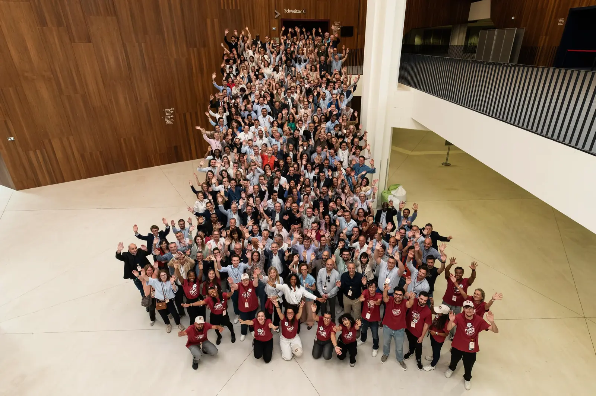
Des fertiliseurs d’entreprisesBusiness growers
Nous sommes une communauté de près de 3000 collaborateurs répartis en France, dans les DOM-TOM, en Pologne, au Portugal, et dans 14 pays d’Afrique de l’Ouest.
Nous accompagnons les TPE, PME, ETI, les chefs d’entreprises, dirigeants, commerçants, professions libérales à toutes les étapes du cycle de vie de l’entreprise.
Les métiers de nos cabinets comptables
Nous sommes un réseau de fertiliseurs d’entreprises passionnés qui œuvre avec vous au quotidien pour faire germer l’entreprenariat et faire grandir vos entreprises. Nous sommes toujours à l’écoute pour vous proposer le meilleur de notre communauté avec des solutions proches de chez vous grâce à nos 140 bureaux. Nous vous accompagnons à toutes les étapes du cycle de vie de votre entreprise.
Que vous soyez une petite entreprise en pleine croissance ou une grande entreprise internationale, nous vous offrons des services personnalisés dans les domaines de l’expertise comptable, de l’audit, du conseil, du juridique et fiscal, de la gestion de la paie et des ressources humaines, la gestion de patrimoine ou encore la cession et transmission. Notre vous proposons une offre large de services pour être sûrs de répondre à l’ensemble de vos problématiques.
We are a community of nearly 3,000 employees in France, the French overseas departments and territories, Poland, Portugal and 14 countries in West Africa.
We support small businesses, SMEs, ETIs and entrepreneurs, managers, retailers, self-employed professionals at every stage in the company’s life cycle.
Professions in our accounting firms
We are a a network of passionate business fertilizers who work with you every day to help entrepreneurship germinate and your business grow. We’re always on hand to offer you the best of our community, with solutions close to home thanks to our 140 offices. We support you at every stage of your company’s life cycle.
Whether you’re a small, fast-growing company or a major international corporation, we can offer you customized services in the fields of certified accounting, auditing, consulting, legal and tax advice, payroll and human resources management, asset management, and transfer and divestment. We offer a wide range of services to meet all your needs.
Le réseau en quelques chiffresThe network in figures
139
cabinets d’expertise comptableaccounting offices
15
pays d’implantationcountries
+3400
professionnels dans le mondeprofessionals worldwide
350
experts-comptableschartered accountants
À confirmer : chiffres de l’accueil actuel. Selon les pages, le site indique aussi 136 ou 140 cabinets, 3000 collaborateurs, 16 ou 17 pays.To be confirmed: figures from the current home page. Other pages state 136 or 140 offices, 3,000 employees, 16 or 17 countries.
Une histoire portée par une ambition communeA history driven by a shared ambition
Nous sommes une entreprise qui grandit depuis 30 ansWe’ve been growing for 30 years
À confirmer : « depuis 30 ans », alors que le réseau est né en 2002.To confirm: “for 30 years”, whereas the network was founded in 2002.
- 2002
Exco naît de la fusion de deux réseaux : Exco « historique », initialement affilié à Grant Thornton, et A2A, réseau de proximité anciennement affilié à Arthur Andersen.Exco is formed by merging two networks: the “historic” Exco, originally affiliated with Grant Thornton, and A2A, a local network formerly affiliated with Arthur Andersen.
- 2008
Exco rejoint Kreston Global, réseau mondial de cabinets comptables, d’audit et de conseil.Exco joins Kreston Global, a worldwide network of accounting, audit and advisory firms.
- 2026
139 cabinets dans l’annuaire, 23 groupes membres, en France, en outre-mer, en Europe et en Afrique.139 offices in the directory, 23 member groups, in France, overseas France, Europe and Africa.
Une même énergie : fertiliseur d’entreprises
Si le réseau est fondé sur le principe d’indépendance capitalistique des cabinets, c’est sur la base d’une ambition locale commune, de leurs positions de leader en région, d’implantations territoriales complémentaires et d’un même souhait d’affirmer un véritable engagement auprès des entreprises en développement, que nous avons su unir nos forces et partager une même énergie.
Grâce au partage des savoir-faire des cabinets et à la mutualisation des connaissances et moyens techniques, Exco, s’illustre dans une volonté collective.
The same energy: fertilizing businesses
Although the network is founded on the principle of the capital independence of the firms, it is on the basis of a shared local ambition, their leading positions in the regions, complementary territorial locations and a shared desire to assert a genuine commitment to developing companies, that we have been able to join forces and share the same energy.
Thanks to the sharing of expertise and the pooling of knowledge and technical resources, Exco is a collective effort.
- Proximité
- Recherche de qualité
- Poursuite de l’excellence
- Culture de l’innovation
- Proximity
- Quality research
- Pursuit of excellence
- A culture of innovation
La force d’un grand réseau, la proximité d’un cabinetThe strength of a large network, the closeness of a local firm
Offrir la puissance d’un grand réseau et la proximité d’un maillage à taille humaine
Si Exco bénéficie d’un important maillage géographique, notre force, nous la tirons également de la spécificité de notre réseau de cabinets d’expertise comptable.
Ainsi, Exco propose à ses clients l’ensemble des services d’un grand groupe tout en cultivant ce qui est notre force, la proximité et l’agilité de structures à taille humaine qui contribuent au dynamisme de leurs territoires.
La mission de nos cabinets comptables
Chez Exco, nous croyons fermement en une approche naturelle, authentique et accessible des métiers complexes liés à l’expertise comptable et à l’audit.
Notre mission ? Remettre de l’intelligence et du cœur dans le monde des affaires, pour que l’entrepreneuriat devienne une source de joie et d’épanouissement.
Notre approche consiste à vous accompagner dans votre singularité, à ouvrir des portes et à créer des liens pour vous guider vers des solutions adaptées à vos besoins spécifiques.
Notre engagement va au-delà des simples aspects techniques.
Nous nous intéressons avant tout à vos enjeux, à ce qui compte réellement pour vous.
Notre objectif est de vous offrir un accompagnement sur mesure, basé sur une compréhension approfondie de vos besoins et de vos aspirations.
Offering the power of a large network and the proximity of a human-scale network
While Exco benefits from extensive geographical coverage, we also draw our strength from the uniqueness of our network of accountancy firms. accounting firms.
In this way, Exco offers its customers all the services of a large group, while cultivating what is our strength: the proximity and agility of human-scale structures that contribute to the dynamism of their territories. dynamism of their territories.
The mission of our accounting firms
At Exco, we firmly believe in a natural, authentic and accessible approach to the complex business of accounting and auditing.
Our mission? To put intelligence and heart back into business, so that entrepreneurship becomes a source of joy and fulfillment.
Our approach consists of accompanying you in your uniqueness, opening doors and creating links to guide you towards solutions tailored to your specific needs.
Our commitment goes beyond the technical aspects.
Above all, we’re interested in what’s at stake for you, what really matters to you.
Our aim is to offer you tailor-made support, based on a thorough understanding of your needs and aspirations.
Des valeurs collectives qui nous animentThe shared values that drive us
CollectifCollective
Nous croyons à la valeur créée par l’esprit d’équipe et le collectif. Avec nos clients, nos partenaires et à l’interne, nous mettons en place des relations qui favorisent l’écoute, l’échange, la co–construction.We believe in the value created by team spirit and teamwork. With our customers, our partners and internally, we build relationships that encourage listening, exchange and co-construction.
HumanismeHumanism
Nous pensons que l’entrepreneuriat est une aventure humaine. Dans notre état d’esprit, dans notre relationnel, dans nos solutions et nos innovations, nous mettons l’humain au centre.We believe that entrepreneurship is a human adventure. In our mindset, in our relationships, in our solutions and innovations, we put people at the center.
ConfianceTrust
Nous pensons que la confiance permet d’entreprendre et de libérer les énergies. Aussi nous réduisons les process et augmentons la confiance, donc l’autonomie et l’envie de faire.We believe that trust is the key to entrepreneurship and to freeing energies. That’s why we reduce processes and increase trust, which in turn increases autonomy and the desire to get things done.
Une gouvernance décentraliséeDecentralised governance
Le Comité directeur et le Bureau exécutifThe Steering Committee and Executive BoardNous cultivons une gouvernance décentralisée pour être au plus proche de vous et de votre réalité. La stratégie du réseau est définie par un Comité Directeur composé d’associés, représentant chaque cabinet membre du réseau.
Le principe partagé est « d’un homme, une voix » au sein du Comité Directeur, organe de décision du réseau.
Un Bureau Exécutif, composé de six membres élus, est chargé de mettre en œuvre la stratégie du réseau.
Ces deux structures sont présidées par un Associé du réseau, élu par le Comité Directeur.
We cultivate decentralized governance to be as close as possible to you and your reality. Network strategy is defined by a Steering Committee made up of partners representing each member firm.
The shared principle is "one man, one vote on the Board of Directors, the network’s decision-making body.
An Executive Board, composed of six elected members is responsible for implementing the network’s strategy.
Both structures are chaired by a network associate elected by the Board of Directors.
Les 23 groupes membresThe 23 member groups
Chaque groupe garde son indépendance capitalistique et partage avec les autres méthodes, outils et expertises.Each group keeps its capital independence and shares methods, tools and expertise with the others.
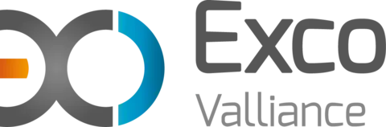
Exco ValliancePérigny · 23 cabinets23 offices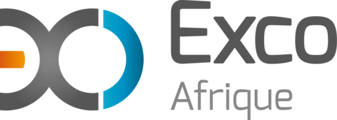
Exco AfriqueCotonou · 14 cabinets14 offices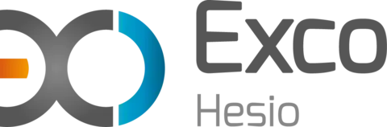
Exco HesioRoanne · 9 cabinets9 officesExco OmniconseilsMarseille · 7 cabinets7 offices Exco NexiomVillers-lès-Nancy · 7 cabinets7 offices
Exco NexiomVillers-lès-Nancy · 7 cabinets7 offices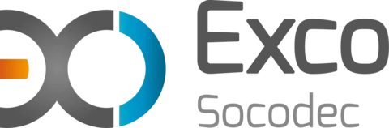
Exco SocodecDijon · 6 cabinets6 offices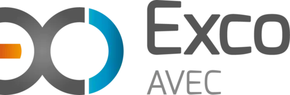
Exco AVECNantes · 6 cabinets6 officesExco Côte d’AzurNice · 3 cabinets3 officesExco Ar MenVannes · 3 cabinets3 officesExco Clermont-FerrandClermont-Ferrand · 2 cabinets2 offices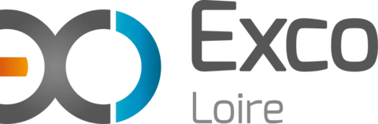
Exco LoireSaint-Étienne · 2 cabinets2 offices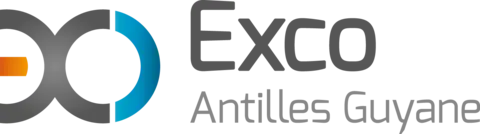
Exco Antilles GuyaneFort-de-France · 2 cabinets2 offices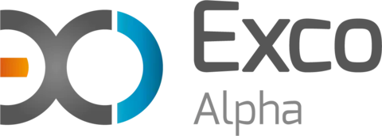
Exco AlphaBourges · 2 cabinets2 offices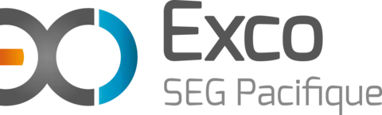
Exco SEG PacifiquePapeete · 1 cabinet1 officeExco P2B AuditMontbéliard · 1 cabinet1 office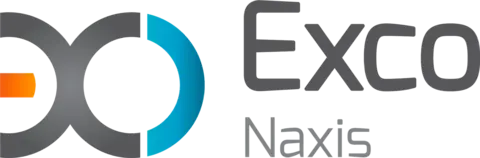
Exco NaxisBelfort · 1 cabinet1 office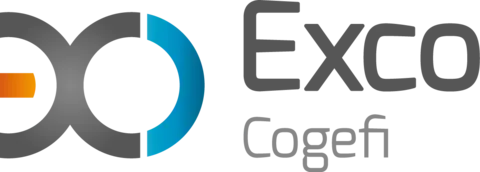
Exco CogéfiLa Réunion · 1 cabinet1 office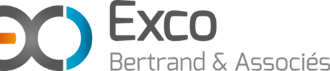
Exco Bertrand & AssociésLa Réunion · 1 cabinet1 officeExco Anis ExpertsLa Réunion · 1 cabinet1 office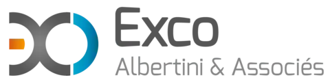
Exco Albertini & AssociésBastia · 1 cabinet1 officeExco AESEÉcully · 1 cabinet1 office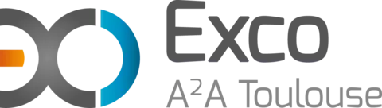
Exco A²A ToulouseToulouse · 1 cabinet1 office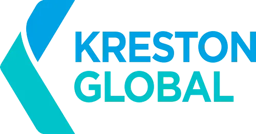
Membre de Kreston Global depuis 2008A member of Kreston Global since 2008
Kreston Global est un réseau mondial de cabinets comptables, d’audit et de conseil, chacun indépendant, présent dans plus de 115 pays. Vos projets internationaux trouvent un relais sur place.Kreston Global is a worldwide network of independent accounting, audit and advisory firms in more than 115 countries. Your international projects find local support.
kreston.comPour aller plus loinFind out more
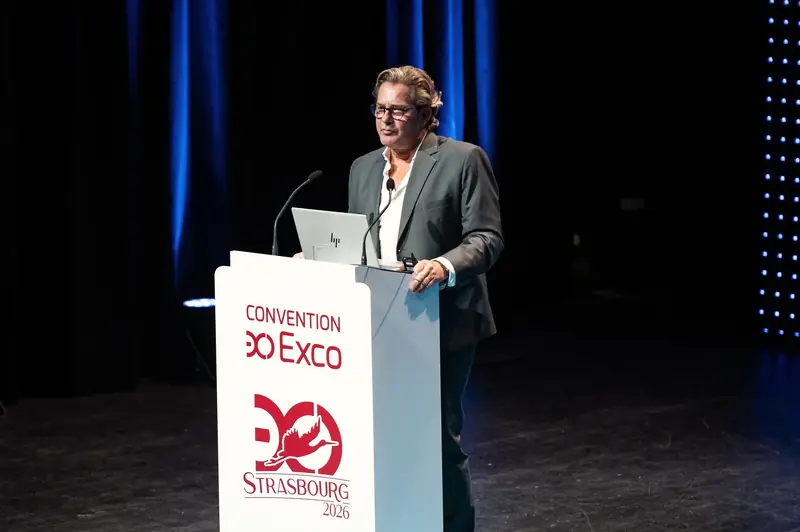
GouvernanceGovernanceUn Comité directeur, un Bureau exécutif, une voix par associé.A Steering Committee, an Executive Board, one vote per partner.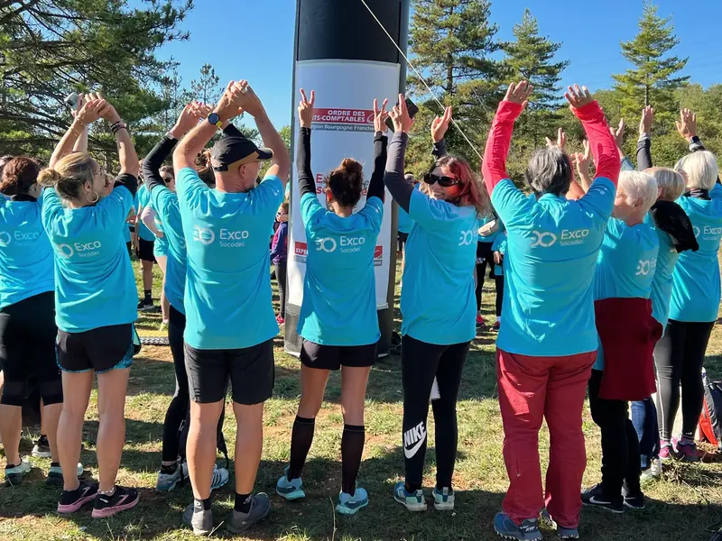
Engagements RSECSR commitmentsEnvironnement, social, économie locale, éthique et transparence.Environment, people, local economy, ethics and transparency.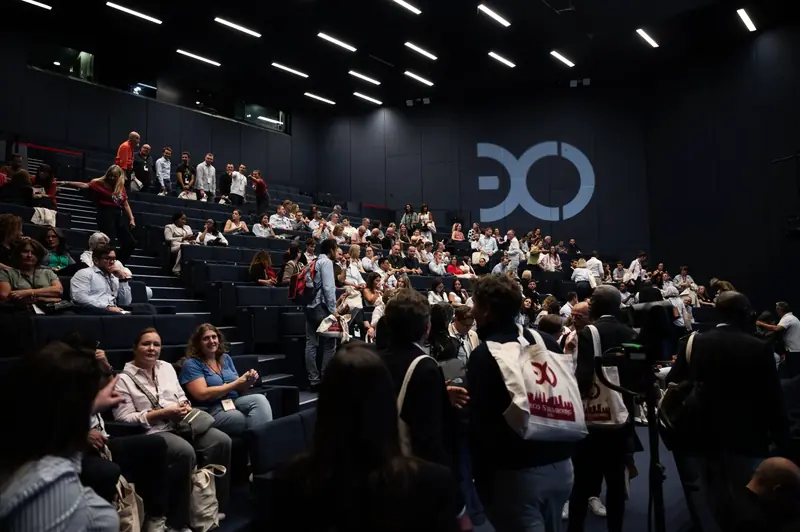
CarrièresCareersPrès de 300 recrutements par an dans les cabinets du réseau.Around 300 hires a year across the network’s offices.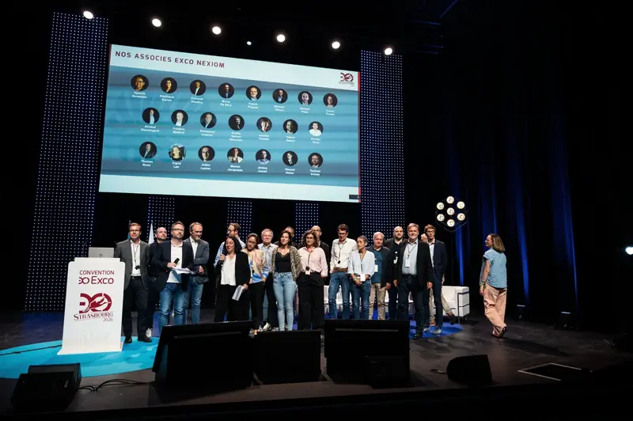
ActualitésNewsConvention, partenariats, événements dans les territoires.Convention, partnerships, local events.
Un projet, une question ?A project or a question?
Trouvez le cabinet Exco le plus proche ou demandez un rendez-vous : un expert vous rappelle.Find your nearest Exco office or request a meeting: an expert will call you back.